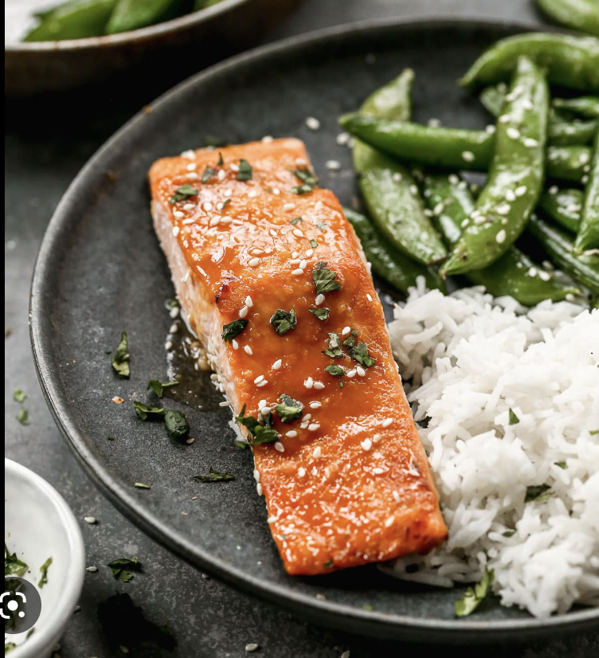

Miso Glazed Salmon

Description
Beautiful salmon filet glazed with a sweet and savory miso sauce. Perfect for kids and adults alike. If you want a healthier version, use brown sugar replacement in recipe.
Ingredients
- Soy sauce
- Water
- Brown Sugar
- White miso
- Salmon Filet
Steps
- Combine 2 tbsp of soy sauce, brown sugar, and hot water with 1/4 cup of brown sugar in small saucepan until sugar and miso dissolved
- Place salmon filet on sheet pan and glaze it with sauce, preheat broiler
- Cook salmon under broiler for 10-12 minutes, checking for burning periodically
- Simmer sauce until reduced
- Serve salmon and with sauce
- Enjoy!